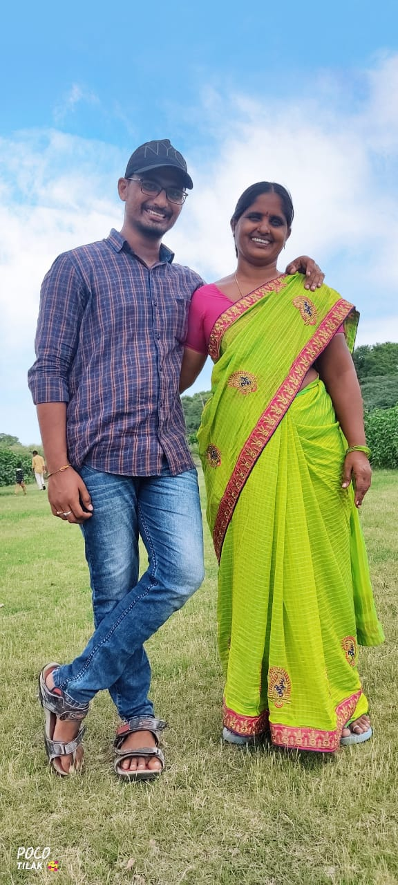
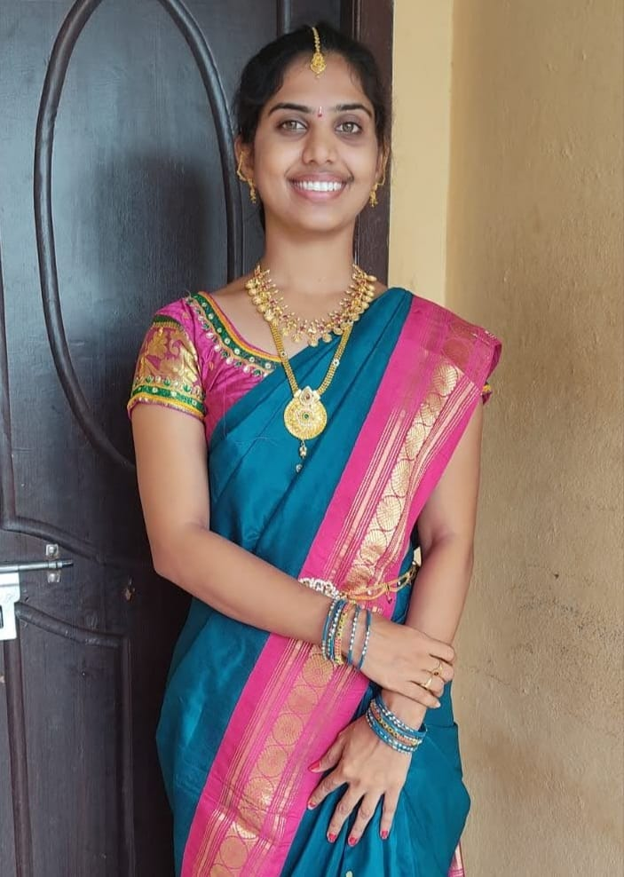

A dad’s role in a child’s well-being is very important.Fathers teach many important lessons to a child,
like how to be affectionate and supportive, and how to take care of everyone else by giving the best example,
and all of this while being great examples themselves.
Fathers are great caretakers, they make their little ones feel safe and secure,
they teach their little ones to ride bikes, to jump higher, and to always aim for the best.
This is why is so important to recognize the labor of all of those involved fathers,
that are day by day supporting their families.
“To her, the name of the father was another name for love.”
“A father is a man who expects his son to be as good a man as he meant to be.”
“Fathers, like mothers, are not born. Men grow into fathers and fathering is a very important stage in their development.”

My Queen...
My mother has always been my emotional barometer and my guidance.
I was lucky enough to get to have one woman who truly helped me through everything.
I remember my mother’s prayers and they have always followed me. They have clung to me all my life.
My mother was the most beautiful woman I ever saw. All I am I owe to my mother. I attribute my success in life to the moral,
Intellectual and physical education I received from her.
“Life began with waking up and loving my mother’s face.”
“The best place to cry is on a mother’s arms.”
“All that I am or ever hope to be, I owe to my angel mother.”

My supporter...
"Sisters are the best kind of friends - there's no friend like a sister."
Sisters are best friends, they are advisors, they are teachers,
Best of all they are people with whom you can talk with about anythingsomeone you have a special bond with!"
Words that describe you: my wise sister, my confidant, and my best friend.
"She's always there for me when I need her; She's my best friend; she's just my everything."